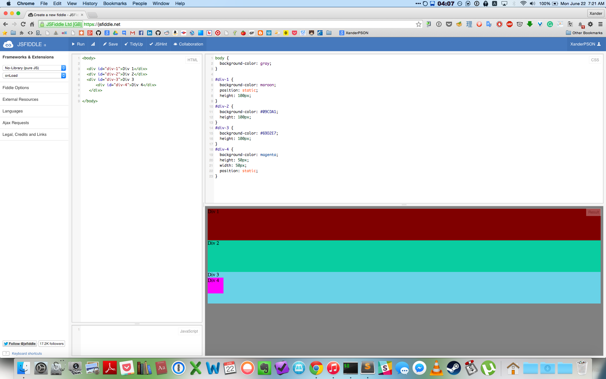
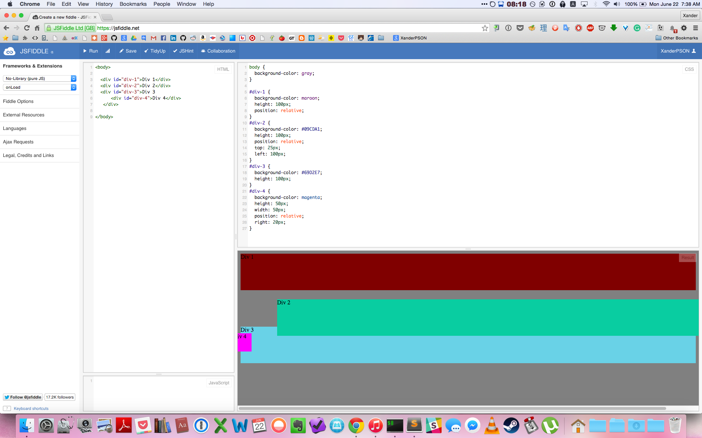
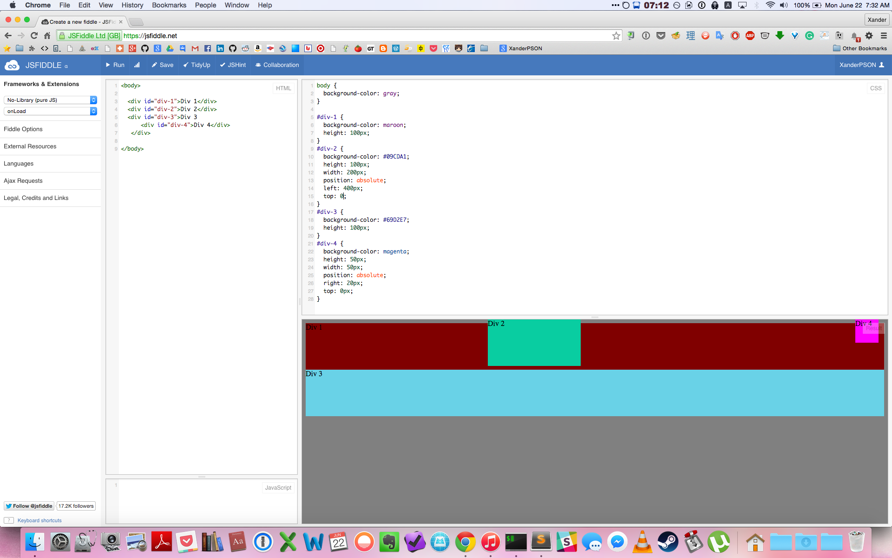
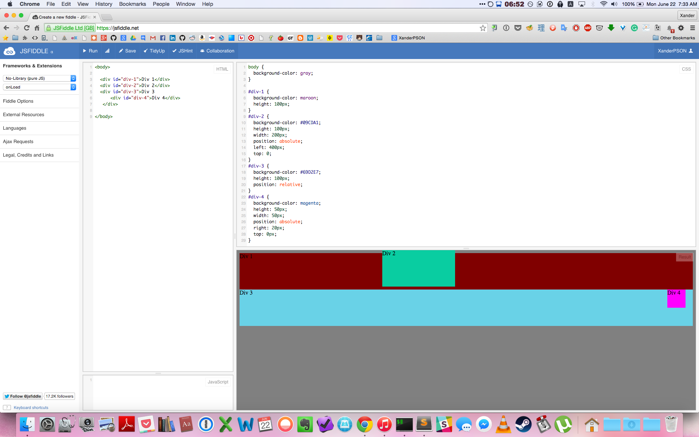

Back That CSS Up!
Assume the Position
June 21st, 2015
Positioning elements in CSS has got to be one of the most confusing things to learn. We're so used to being able to just drag and drop everything that when you're no longer able to it becomes quite a challenge to conceptualize. Furthermore, you have to plan for a whole host of possibile collisions between elements as the user interacts with your interface. I believe that I finally understand the different types of positioning well enough to explain it, but am still wet enough behind the ears that my explanations should serve as a good bridge between being completely new and understanding the basics.
There are four main types of positioning elements: position: static, position: relative position: absolute, and position: fixed.
position: static
The default positioning for all elements is position: static. As it is the default positioning you do not need to specify it.

As you can see in this image, I have set a few positions to static and left a few blank. Had I left them all blank or changed them all to static they would still be in a nice neat row like this.
position: relative
With position: relativeyou are able to move an element around the screen relative to where it would normally be with position: static. What this means is if you enter in position: relativeand don't use further directional commands to move the element around, it will stay in the exact place, because it's default position is the same as position: static. The directional commands that position: relativecan take are top, bottom, left, and right.
It's important to note, however, that even if you've moved an element with position: relative other elements won't fill up the space it's left blank, because it is still considered to be occupying that space. This can leave big blanks paces in your layout that you have to fix!

As you can see in this image, div1 has been set ti position: relative but was not given any directional commands, so it did not move. Div2 was given position: relative and was also told to move 25px from the top (in other words, move 25px down) and move 100px from the left (in other words, move 100px right). This moved it from its default starting position. There is a blank space where it used to be because it is still considered to be "occupying" that space, even though it's been repositioned. Finally, you can see that div4 was also given a position: relative and moved to 20px from the right.
position: absolute
Using position: absolute gives you the most freedom over where to place the element. It takes the same directional commands as position: relative but instead of moving the element relative to its normal default position, you move the element relative to its next parent element that has a position of position: relative. By default this is the webpage itself, so if you don't set any parent element to position: relative, the element you assign position: absolute to will move relative to the screen itself! So if you were to do top: 0 then that element would shoot straight to the top of the page! Note that when you do this the element is considered to have "relinquished" its default spot, and other elements will automatically move to fill up the space; this is opposite of what happens with position: relative

Here you can see that div2 has been given position: absolute and been told to go to move to 0px from the top and 400px from the left. It is moving relative to the body element, which accounts for the entire page. It does this because its next parent element that has a position set to anything other than static is, by default, the body element. You can also see that div4, which is a child of div3, also moved in relation to the page, and not its parent element div3. Why is that?
If there is a parent element with a position of position: relativeset before the position: absolute element, then the position: absolute child element will move in relation to that position: relative parent element.

Now the only thing I've done is given div3 a position: relative value, and look what happens - its child element, div4, now is repositioning itself in relation to div3 and not the page. Neat!
position: fixed
Finally we have position: fixed. Assiging this to an element is sort of like assigning an element position: absolute when no parent element is set to position: relative; in other words, setting an element to position: fixed to top: 0 will send the element straight to the top of the window, no matter what! postion: fixed will always be moved relative to the screen. There is one catch though - this means that if the user scrolls down the page, that element will still be affixed to the screen at that place! Therefore this should only be used in instances when you want something to permanently follow the user; for example, the main link bar at the top, or a scroll bar on the side.
Here you can see that I've changed div4 to have position: fixed. Now it will jump up to the top of the page and stay there, despite its parent element, div3, having a value of position: relative.
Positioning in CSS can be really, really tricky to understand, and to be honest, I'm still figuring it out. But hopefully this gave you a little better idea of what to expect when trying to arrange your elements. Good luck!